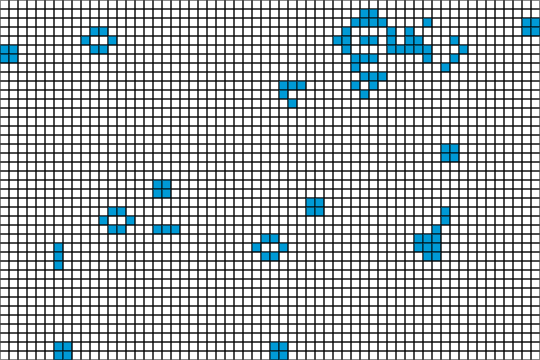

ライフゲーム
実行例
 実行結果を見る
ソースコード
解説/アルゴリズム
ライフゲームはイギリスの数学者コンウェイが考案したシミュレーションゲームで、単純なルールで生命の誕生、進化、淘汰の過程を表現することができます。
変化の条件
各セルには生と死の 2 つの状態があり、次の更新で周りのセルの状態によって自身の状態が決まります。
| 状態 | 現在 | 次 | 条件 |
|---|---|---|---|
| 誕生 | 死 | 生 | 生きているセルが周りに 3 つある |
| 生存 | 生 | 死 | 生きているセルが周りに 2 つか 3 つある |
| 過疎 | 生 | 死 | 生きているセルが周りに 1 つ以下 |
| 過密 | 生 | 死 | 生きているセルが周りに 4 つ以上 |
// 自身は死んでいて、周りに生きているセルが3つあったら次に生き返る
if (board[i] === CellType.dead) {
if (aliveCellNum === 3) {
drawBoard[i] = CellType.alive;
}
}
// 自身は生きていて、周りに生きているセルが2つか3つあったらそのまま生存
// でなければ死ぬ
else {
if (aliveCellNum === 2 || aliveCellNum === 3) {
drawBoard[i] = CellType.alive;
} else {
drawBoard[i] = CellType.dead;
}
}
コードを書くときの注意点
変化の条件にある通り、周りの状態を参照する必要があるため、計算済みの状態を参照しないように別配列を用意して結果をそちらに書き込む必要があります。